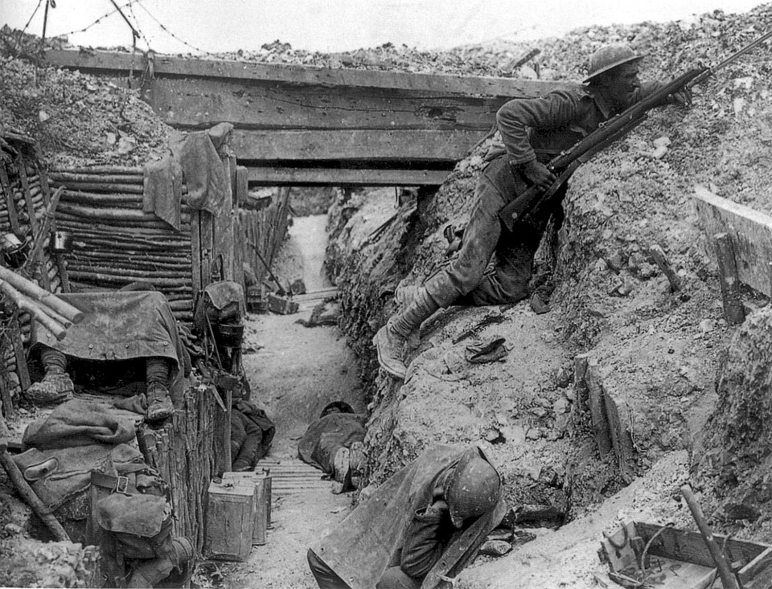

Uniforms & gear
Discover how uniforms and equipment reflected rank, nationality, and the harsh demands of trench warfare.
A virtual exhibition of uniforms, weapons, and the human stories of the Great War.
Explore the artifacts, uniforms, and wartime experiences that shaped the First World War between 1914 and 1918.
This virtual museum presents the story of World War One through uniforms, weapons, battlefield innovation, and the everyday lives of soldiers and civilians.
Learn how the war transformed technology, society, and the world map, and discover the personal histories behind the headlines.

Discover how uniforms and equipment reflected rank, nationality, and the harsh demands of trench warfare.

Explore rifles, machine guns, grenades, and artillery that defined the battlefields of 1914–1918.

Read about the causes, battles, and lasting consequences of the First World War.